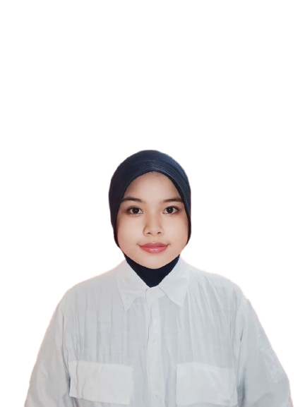

Hi, I'm
Vella Puspita
Web Developer
Halo! Nama saya Vella. Saya seorang mahasiswa di Universitas Pendidikan Nasional. Saat ini, saya tengah mengejar mimpi saya dalam bidang pendidikan. Saya sangat antusias dalam mempelajari hal-hal baru dan berkontribusi dalam dunia pendidikan. Selain itu, saya juga memiliki minat dalam beberapa kegiatan di luar kelas, seperti organisasi mahasiswa atau proyek-proyek sukarela. Saya percaya bahwa melalui pendidikan, kita dapat menciptakan perubahan positif dalam masyarakat. Terima kasih telah mengenal saya!/p> 